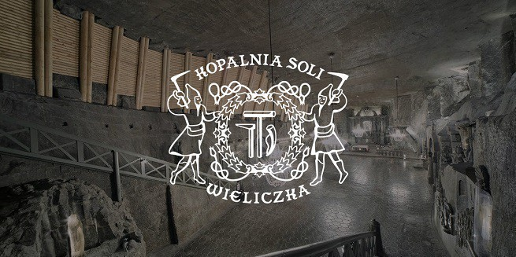

Visit the mine
Tourist Route
You will admire landscapes that can’t be found on the surface: as saline lakes and beautiful underground chambers, including the unique St Kinga’s Chapel. You will learn about old mining tools and machines and the methods of salt extraction and transport used in the past. The tour is available for people of all ages and does not require above-average physical condition, but it is worth bearing in mind that there are more than 800 steps to climb.
Miners' Route
You will wander through the underground salt labyrinth, exploring the mysterious and raw chambers around the oldest preserved Regis Shaft. Tasks await you, such as searching for salt, testing the air in the mine and finding the right route underground. By performing practical mining tasks, you will get to know the work of representatives of old mining professions, such as methane tester and mining carpenter. You will feel a shot of adrenaline, you will take part in an extraordinary, multisensory experience!
Graduation Tower
You will experience a sense of well-being and an increase of energy to act, especially if you face stress and fatigue on a daily basis. Every breath brings a purification of the respiratory tract. You will feel relief if you live in a large agglomeration, have contact with polluted air. The visit is recommended for allergy sufferers who have skin and inhalation problems, as well as people with reduced immunity. You can relax in your own way, even by blissfully doing nothing. You can also spend your time more actively, for example by engaging in some Nordic Walking.